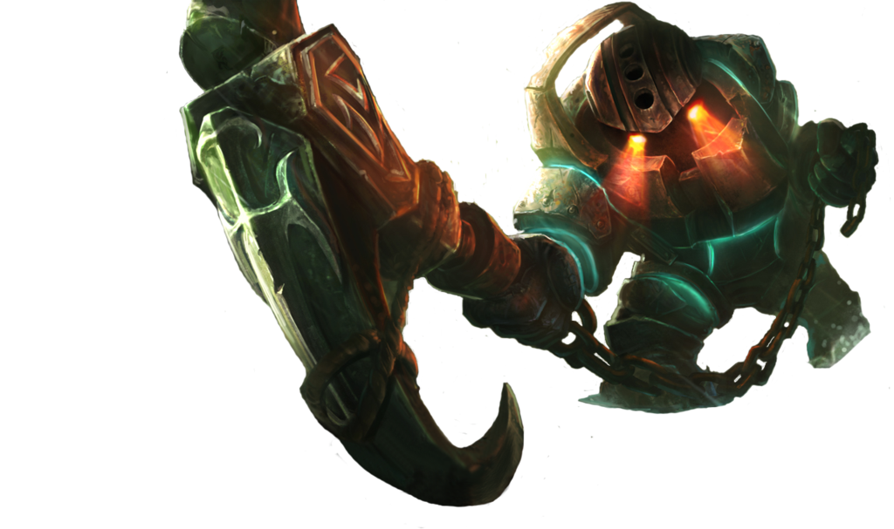
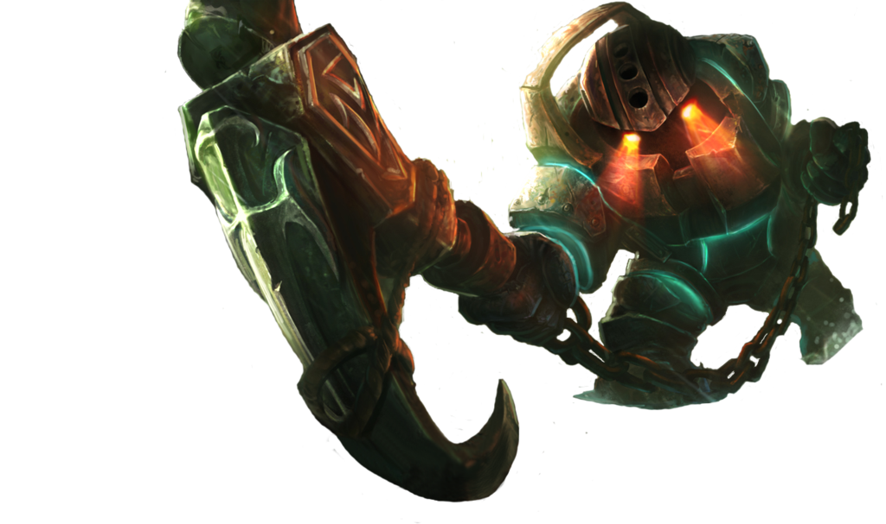

CAMPEONATO BRASILEIRO DE LEAGUE OS LEGENDS 2020
Resumo da Final da Primeira Etapa
Kabum é Campeão!
Assim como demonstrou nas últimas rodadas da Fase de Entrada e nas semifinais, a KaBuM seguiu sendo dominante e manteve o mesmo estilo de jogo avassalador no triunfo sobre o Flamengo na final do 1º Split do Campeonato Brasileiro de League of Legends (CBLoL) de 2020. Para faturar o quarto título da história da organização e manter a invencibilidade em finais da competição, os Ninjas apostaram em gerar recursos para Arthur "Tutsz" e Igor "DudsTheBoy", com ênfase em impulsionar a rota inferior, e priorizaram deixar Lee "Parang" em situações confortáveis. Além disso, o controle dos objetivos, principalmente os dragões, também influenciaram diretamente no desfecho favorável à KaBuM.
Time campeão do CBLOL 2020